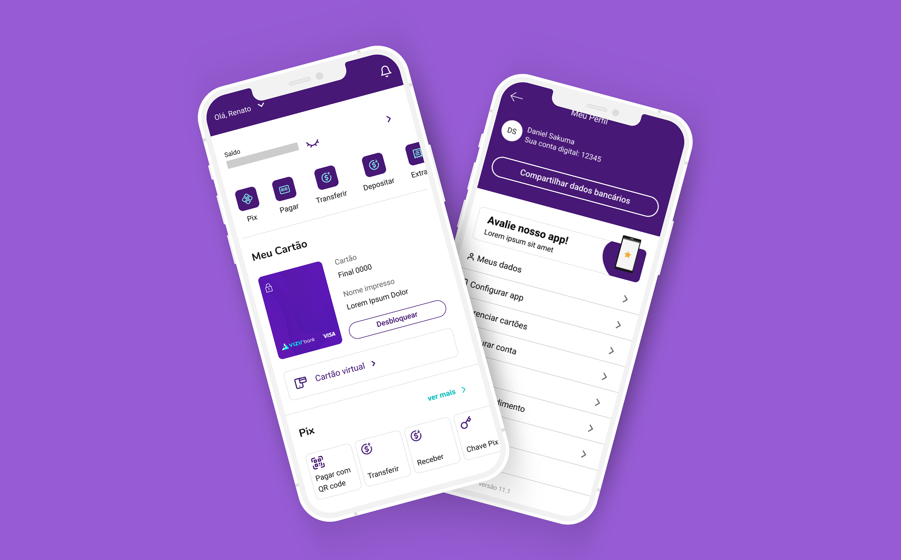
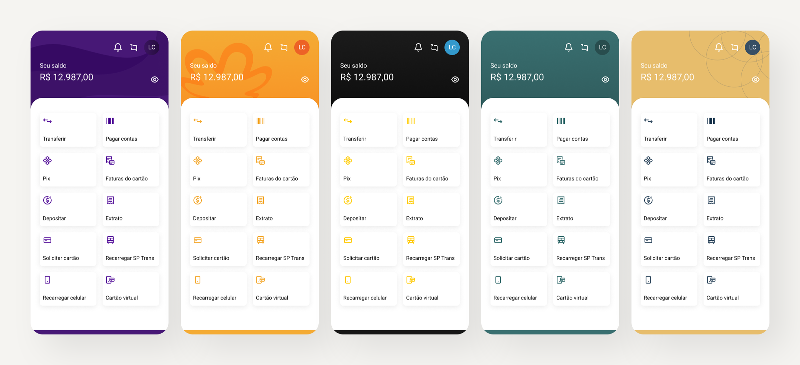
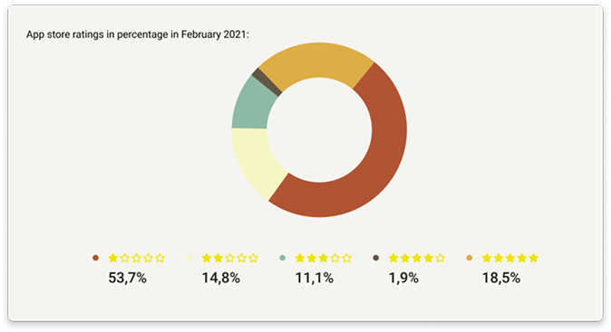
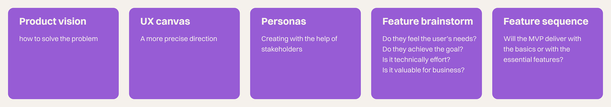
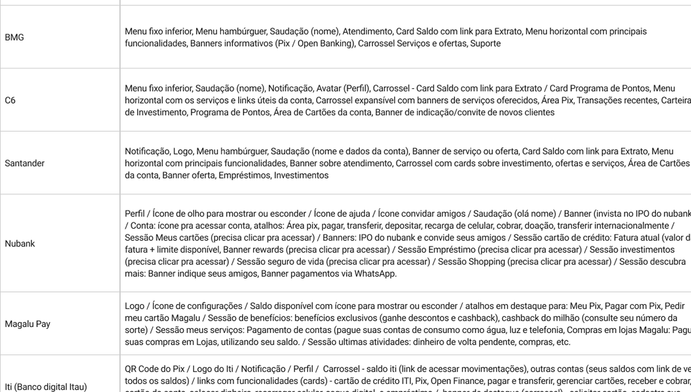
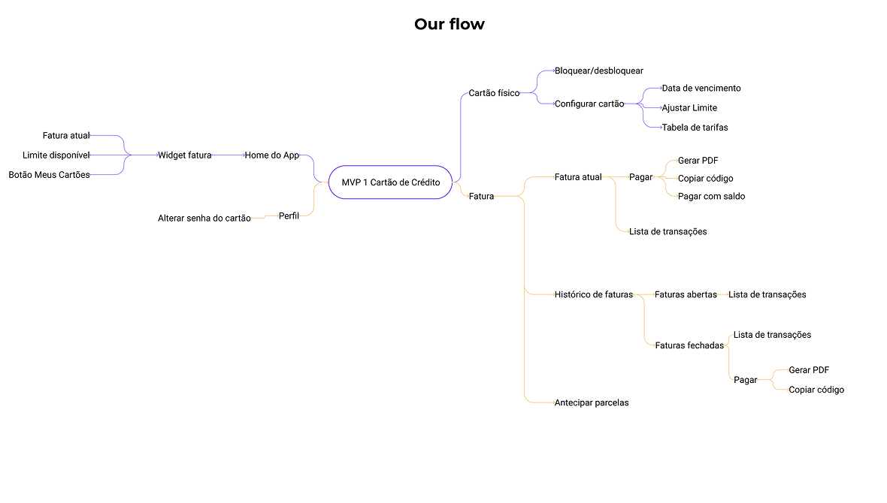
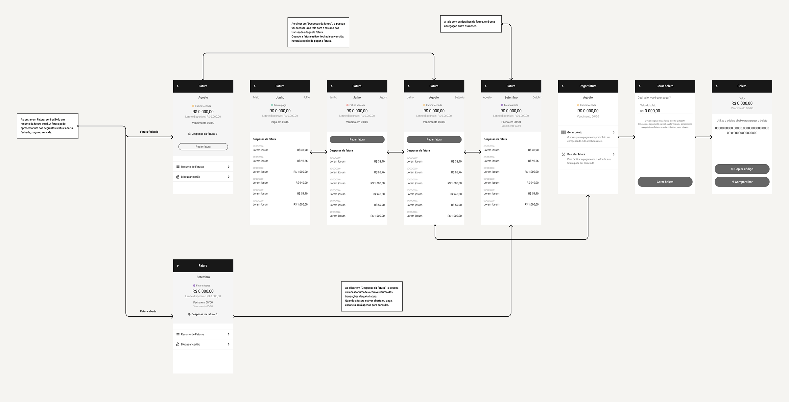
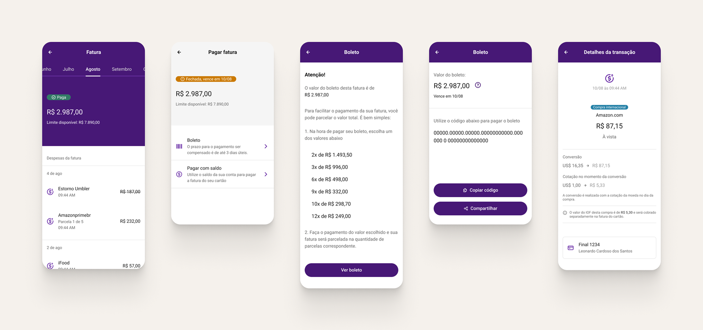
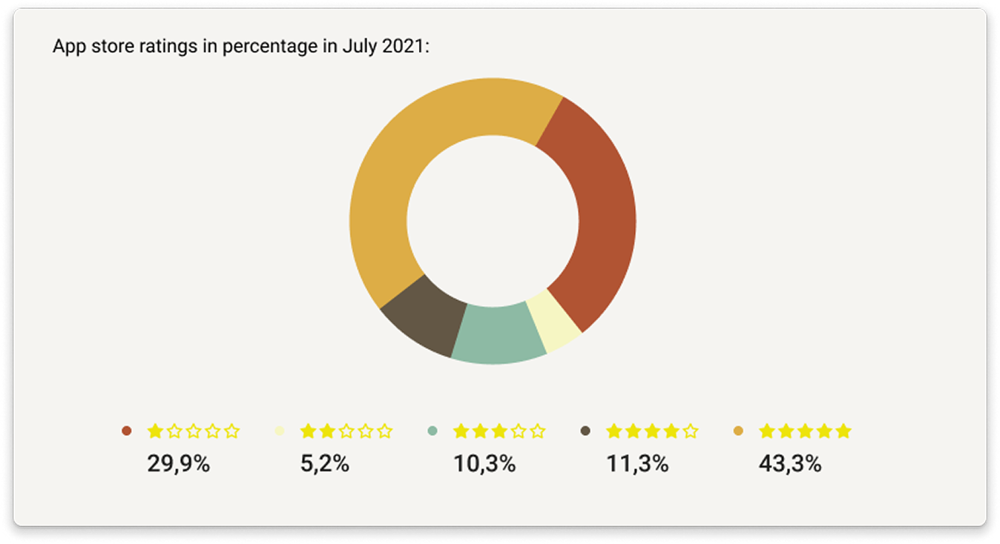

VIZIR BANK white label bank
Role: Product designer
Team: Cross-functional (Designers, Developers, Product managers, Product Owners, Leadership)

THE BRIEF
A modular digital banking app letting any business launch its own bank with custom branding and industry-specific features.
OVERVIEW
Vizir Bank is a digital banking application designed to be used by any business that wants to have a bank. Unlike current banks, in addition to offering the identity of the person who will use it, the company can also provide specific functionalities for the business.
THE CHALLENGE
Scaling a Single-Client Product into a White Label Solution
Rushed to meet a single client's demands, the product launched with a hard-coded architecture and no documentation. This lack of discovery resulted in a rigid user flow tailored to one specific audience, making it nearly impossible to scale or customize as a true white-label solution.
THE SOLUTION
Scalable Modular Architecture
We decoupled the core banking logic from the UI, replacing hard-coded elements with a flexible design system. This allows any business to bypass bureaucracy and instantly apply their own branding and industry-specific features like payroll or benefits.
THE CHALLENGE OF CREATING A DIGITAL BANK
The Brazilian bureaucracy to open a digital bank turns out to be very complicated, that's why the product offers ease in skipping bureaucratic steps, and the customer ends up having only the effort to have their identity applied in the application. In addition, our differential is to create a feature for each customer's desire. Therefore, apart from the essential elements a bank has, they can differ depending on their market.
The product helps companies by making it easier to pay salaries and other benefits in one place.
How to make a white label product and serve multiple customers from a product born from a specific customer?
One of the biggest challenges of this product is that the White Label Banking was created from a client and their requirements, so our flow was based on it. Based on his requests, we shaped the experience and adjusted it to the way he demanded. The result is that when making a delivery that should have been White Label, in the end, it wasn't so much because of some obstacles:
- Some experiences of our product Core flow were thought only for users of that specific customer, making it not the best for others analyzing the results of customer feedback and reviews from APP Stores.
- Time was too short for so many features, which ended up impacting the End-to-end: many steps were skipped, such as user surveys, Discovery and Design Sprints.
- Within a short time, everyone was impacted, which included the developers, and the result was that some components were hard coded, making it impossible to be openly customizable.
- Lack of documentation and organization: With the product being launched in a hurry, there was no documentation, which ended up impacting the creation of new features and components.

One of our users' difficulties was that the features were the same size on the home screen, with no hierarchy.

The product's performance reflected the negative impact of architectural shortcuts. The Customer Success team found a gap between user expectations and the app's actual delivery, leading to a low 2.8-star rating.
This score revealed issues with rigid user flows and unoptimized features, indicating that the 'hard-coded' approach was unsustainable in a competitive market.
DESIGN PROCESS
When launching, we faced some challenges with user satisfaction, reflected in a 2.8-star rating. This prompted us to pause for reflection and carefully examine our architectural approach. We soon realized that to truly progress, we needed to take a step back and re-assess how we worked together.
Originally, we tried a Design Sprint, an effective five-day process for answering key business questions through designing, prototyping, and testing with users. However, with so many stakeholders involved, committing to such an intensive, week-long process proved unworkable.
So, we shifted gears to Lean Inception, a collaborative workshop aimed at bringing the team together around the goals, personas, and features of our Minimum Viable Product (MVP). By streamlining this into a focused two-day, six-part discussion, we managed to align everyone on a clear strategic path without the scheduling challenges of a full sprint.
Overall, Lean Inception proved to be the most effective method for engaging with our customers, understanding their needs, and encouraging broader participation in the discussion.

DISCOVERY AND PROCESS
After Lean Inception, we proceeded to research our competitors, similar to the approach taken for the Home page. We mapped out key competitors and analyzed their user flows to gain a clearer understanding of the market dynamics.
A User Flow is designed to clearly show and better visualize the user's journey. This way, it makes understanding the process more intuitive and straightforward.


The competitors flow vs our new flow
VALIDATION
As the flow becomes clearer, it's a great time to start sketching out the structure of the interface. This helps to make sure that the hierarchy is well-defined and that all information is neatly organized, ensuring everything works together smoothly.
In the meantime, we stay connected and keep everyone in the loop. The PO's are here to validate flows, PM's share updates on how the sprint is progressing, and our developers are closely checking how long tasks take and exploring ways to make their work easier. The customer is also kept informed of all the steps along the way, ensuring transparency and teamwork every step of the journey.
To ensure long-term scalability, we established a robust Design System, creating a unified library of reusable components that guarantees visual consistency across all white-label iterations.

THE RESULT
Once everything is validated, we can proceed to the UI design, enabling us to work more consistently and efficiently thanks to our new Design System.


The relaunch was a fantastic success, directly tackling every identified pain point and turning things around for our users. By July, the improvements showed impressive results in the App Store, where our rating jumped from 2.8 to 4.1 stars.
Internal surveys by the Customer Success team also showed a big boost in user satisfaction. But the real proof was in the market: the sleek, modern UI attracted five major new clients excited to use our white-label solution.
This transformation demonstrated that by focusing on consistency and modularity, we could turn a rigid product into a flexible, premium banking engine that's ready to grow.